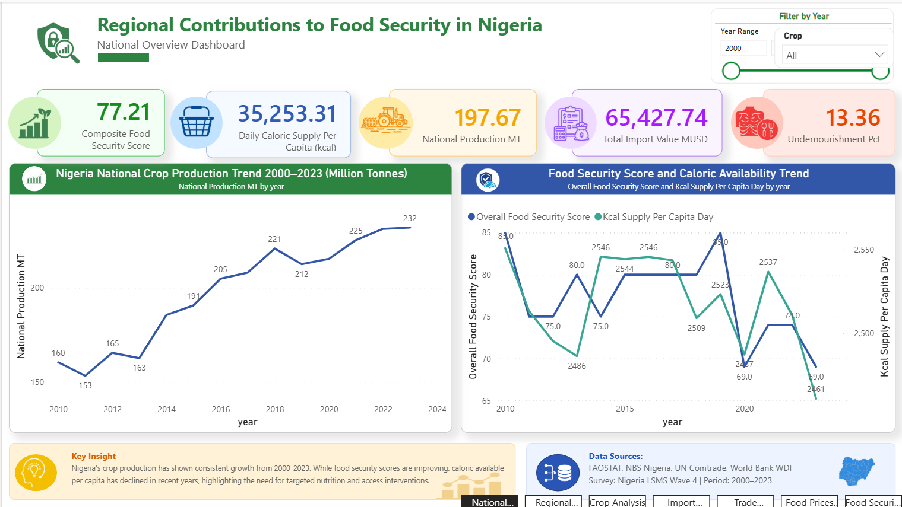

From production data to executive reporting
A visual case study combining five data domains, analytical SQL, SQLite, and a seven-page Power BI dashboard.
View case study GitHub repositoryAgriculture × Environment × Data
Agricultural & Environmental Engineer | Data Analyst
Exploring agricultural and environmental systems through data.
How production, mechanization, and farm-level practice shape output across regions.
How production, distribution, and access interact to determine reliable food supply.
How soil, water, and climate conditions constrain and shape agricultural systems.
The resource base underlying agricultural productivity and sustainability.
Turning raw agricultural and environmental data into structured, defensible insight.
Applying engineering principles to agricultural machinery and process design.
An end-to-end analytical investigation of production, trade, prices, and welfare in Nigeria.

A visual case study combining five data domains, analytical SQL, SQLite, and a seven-page Power BI dashboard.
View case study GitHub repositoryA visual analysis of production, trade, prices, and welfare across Nigeria's food system.
View project
A final-year engineering project focused on structural design within a three-person team.
View projectI combine agricultural and environmental engineering knowledge with data analytics to investigate complex agricultural, food-security, and environmental systems, and translate data into actionable insight.
Open to opportunities and collaboration in agricultural analytics, food security research, and environmental data work.
Get in Touch